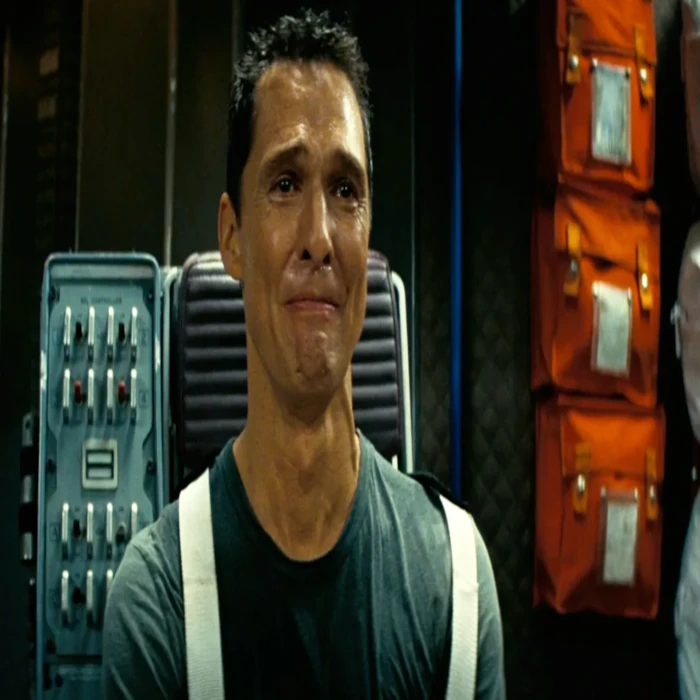

Em um futuro distópico, a Terra está morrendo e a humanidade enfrenta a extinção. Um ex-piloto da NASA, Cooper, é recrutado para liderar uma missão pelo espaço através de um buraco de minhoca, com o objetivo de encontrar um novo planeta habitável para a espécie humana. Enquanto isso, sua filha Murph tenta resolver uma equação que pode salvar a todos, enquanto lida com a ausência do pai.
Sobre o Filme
Interestelar é uma obra-prima da ficção científica dirigida por Christopher Nolan, que combina emoção, ciência e filosofia em uma narrativa envolvente. O filme aborda temas como a sobrevivência da humanidade, os limites do tempo e espaço, e a força dos laços familiares. Com uma trilha sonora marcante de Hans Zimmer, efeitos visuais impressionantes e uma história profunda, Interestelar leva o espectador a refletir sobre o futuro da Terra, a exploração espacial e o significado do amor em meio ao desconhecido. É um filme que emociona tanto pela grandiosidade do universo quanto pela intimidade das relações humanas.
Astros principais do filme
Cooper é um ex-piloto da NASA e engenheiro que vive em uma Terra devastada por tempestades de poeira e escassez de alimentos. Inteligente, determinado e movido pelo amor à sua família, especialmente à sua filha Murph, ele aceita uma missão interestelar arriscada para encontrar um novo lar para a humanidade. Apesar da dor de deixar seus filhos para trás, Cooper demonstra enorme coragem e senso de dever, sendo o pilar emocional da história e um exemplo de sacrifício pelo bem maior.

Amelia Brand é uma cientista brilhante e filha de um dos responsáveis pela missão espacial, o Professor Brand. Ela acompanha Cooper na jornada através do buraco de minhoca, trazendo uma perspectiva racional, mas também emocional ao longo da missão. Sua personagem é marcada por conflitos internos entre a lógica científica e os sentimentos humanos, mostrando que o amor também pode ser uma força poderosa na tomada de decisões. Amelia representa a esperança e a fé mesmo diante das incertezas do cosmos.
Atores Princípais
Matthew McConaughey
Matthew McConaughey é um ator norte-americano conhecido por sua versatilidade e presença carismática nas telas. Após uma carreira marcada por comédias românticas nos anos 2000, McConaughey passou por uma fase de transformação artística, conhecida como "McConaissance", onde passou a se destacar em papéis mais intensos e dramáticos. Seu desempenho em Interestelar foi amplamente elogiado por sua profundidade emocional e autenticidade, mostrando um pai dividido entre sua missão épica e o amor incondicional pelos filhos. O papel de Cooper solidificou ainda mais sua posição como um dos grandes atores de sua geração.
Anne Hathaway
Anne Hathaway é uma atriz premiada e respeitada por sua capacidade de se adaptar a diferentes estilos de atuação, desde musicais até grandes produções de ficção científica. Em Interestelar, ela interpreta a cientista Amelia Brand com uma mistura de racionalidade e sensibilidade, trazendo uma dimensão humana à complexa jornada espacial. Hathaway já havia se destacado em filmes como Os Miseráveis e O Diabo Veste Prada, e seu papel em Interestelar reafirma sua habilidade de entregar atuações emocionantes e impactantes, mesmo em cenários grandiosos e futuristas.
Onde assistir?
Atualmente, Interestelar está disponível em diversas plataformas de streaming e aluguel digital. É possível assisti-lo na Netflix, além de serviços como Amazon Prime Video, Apple TV e Google Play Filmes, onde o filme pode ser alugado ou comprado. A disponibilidade pode variar com o tempo e de acordo com a região, por isso é sempre bom verificar diretamente nas plataformas. Para os fãs de ficção científica e grandes produções cinematográficas, vale muito a pena conferir!